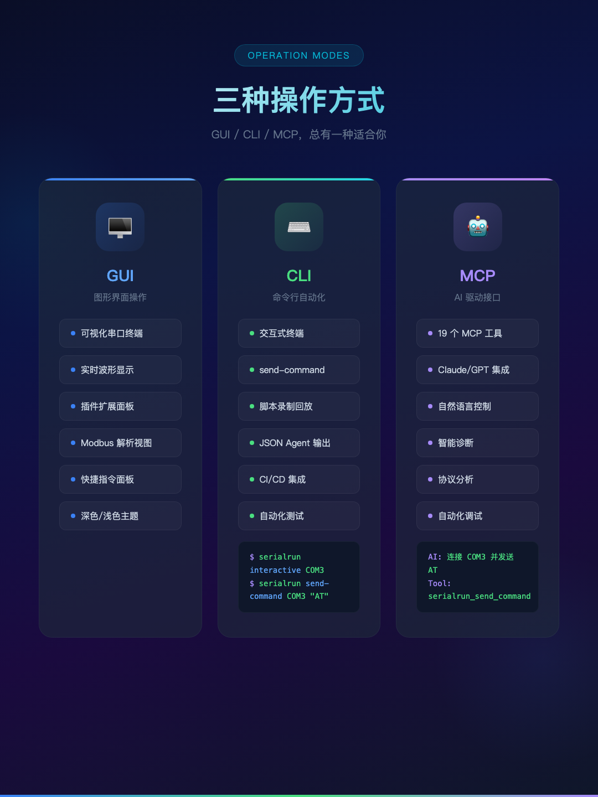

如果你只有 6 天时间，你能创造什么？
2026 年 5 月 30 日，凌晨 2:47。
一个嵌入式开发者坐在屏幕前，面前是三个窗口：minicom 在左边，Modbus Poll 在右边，TIA Portal 在底部。他正在调试一个 PLC 系统，需要同时监控 Modbus 寄存器、检查 AT 指令响应、观察 CAN 总线数据。
每切换一次窗口，就丢失一次上下文。每手动输入一次指令，就浪费 30 秒。每记录一次数据，就少一次调试机会。
他打开 GitHub，搜索"serial port debugger"。结果：putty（太老）、moserial（只支持 Linux）、CoolTerm（要收费）、SerialPort Utility（功能太少）。
没有一个工具能同时做这些事。
那一刻，他做了一个决定：自己写一个。
这个问题被问了无数次。答案很简单：串口操作涉及硬件，一个 buffer overflow 可能烧掉一块开发板。Rust 的内存安全保证不是学术概念，是工程底线。
但 Rust 的学习曲线是真实的。GUI 框架 egui 是即时模式渲染——没有 DOM，没有 CSS，没有 JavaScript。每个像素都是代码画出来的。这意味着开发速度比 Web 技术栈慢 3-5 倍。
所以第一版的功能清单很克制：
串口通信（HEX/TEXT、时间戳、CRC）
Modbus 调试（8 种功能码）
PLC 控制（4 个品牌预设）
CAN 总线分析
I2C/SPI 调试
固件烧录（STM32、ESP32）
没有插件系统。没有 AI 集成。没有 CLI。
只有核心功能，做到极致。
发布当天，macOS 用户报告：「启动后界面是黑的。」
排查了两个小时。原因是 egui 的默认 visuals 是 Dark 模式，但 eframe 的窗口背景是白色。两者冲突导致渲染异常。
修复只有一行代码：在 run_native 回调里设置正确的 visuals。
但这一行代码，花了两个小时才找到。
v0.1.0 发布 48 小时后，v0.2.0 上线。
这不是计划好的。这是被用户推着走的。
用户 A 说：「我需要烧录 STC 单片机，能加个插件吗？」
用户 B 说：「MCP 的文档太少了，AI 助手不知道怎么用。」
用户 C 说：「CAN 总线的数据能独立显示吗？不想和终端混在一起。」
三个需求，指向同一个方向：可扩展性。
设计插件系统用了 6 小时。核心决策：
1. 插件是 Rust 动态库（cdylib），不是 Web 组件。性能是底线。
2. 插件通过 FFI 与宿主通信，不是进程间通信。零拷贝。
3. 插件有自己的 UI 面板，但渲染在宿主的窗口系统里。不需要额外的窗口管理。
第一个插件是 STC ISP——用于烧录国产 STC 单片机。STC 的 ISP 协议是专有时序，需要精确到微秒的握手。这个插件的代码量超过了 SerialRUN 核心的一半。
MCP（Model Context Protocol）是 AI 助手与外部工具通信的标准协议。SerialRUN 内置 MCP 服务器，让 Claude、ChatGPT 等 AI 助手可以直接控制串口设备。
15 个内置工具，覆盖了串口操作的全部场景。
但文档是个问题。用户复制了一段 JSON-RPC 请求发给 AI，AI 回复：「我不理解这个协议。」
解决方案：在帮助面板加一个「一键复制」按钮。用户点击按钮，完整的 MCP 工具文档就复制到剪贴板了。粘贴给 AI，它立刻知道怎么用。
一行代码的改动，解决了用户最大的痛点。
「我每天要输入 200 次 AT+CSQ。」
这不是夸张。调试无线模块时，你需要反复检查信号强度、网络注册状态、模块版本。每次都要手动输入指令，等待响应，记录结果。
快捷指令功能就是为这个场景设计的。
最初的方案是：在输入框旁边加一个「收藏」按钮。点击后弹出对话框，输入名称和指令，保存。
但这太重了。用户需要的是一键操作，不是三步操作。
最终方案：
1. 输入框右侧的 + 号——点击即保存
2. 展开后显示所有快捷指令——点击即发送
3. 右键菜单——删除指令
三个操作，覆盖了 95% 的使用场景。
快捷指令的 UI 实现花了 8 个小时。问题不在于功能，而在于布局：
按钮行和输入行重叠
展开时输入行被推到屏幕外
滚动条太粗，影响视觉
浅色/深色模式下按钮颜色不一致
点击按钮后焦点丢失
每个问题都不大，但组合在一起就是灾难。
最终方案：把快捷指令行放在过滤栏和输入行之间，用 ScrollArea 限制高度，按钮颜色跟随主题。
80% 的时间花在 UI 调试上，20% 花在功能实现上。 这就是 GUI 开发的现实。

「我需要在 GitHub Actions 里测试串口设备。不可能每次打开一个 GUI 窗口。」
这个需求让我重新思考 SerialRUN 的定位。
GUI 是给人看的。CLI 是给机器用的。MCP 是给 AI 用的。
三种交互方式，同一个内核。
minicom 是 1990 年代的产物，但它的交互模式至今无人超越：
$ minicom -D /dev/ttyUSB0 -b 115200
AT> AT+CSQ
AT> +CSQ: 25,99
AT> exit
串口在整个会话期间保持打开。你输入指令，看到响应，继续输入。没有进程切换，没有数据丢失。
SerialRUN 的 CLI 模式就是 minicom 的现代版：
$ serialrun interactive /dev/ttyUSB0 --baud 115200
SerialRUN Interactive Mode (v0.4.0)
serialrun> cmd AT+CSQ
← +CSQ: 25,99
serialrun> modbus-r 0 5
← [1, 2, 3, 4, 5]
serialrun> exit
同样的灵魂，不同的时代。
实现 CLI 有两种方式：
方案 A：独立二进制
serialrun.exe (GUI)
serialrun-cli.exe (CLI)
两个文件，两个安装包，两个维护路径。
方案 B：同一个二进制
serialrun.exe (GUI + CLI)
serialrun → 启动 GUI
serialrun send-command "AT" → CLI 模式
一个文件，零额外成本。
我选了方案 B。原因：用户体验比架构优雅更重要。
在 main.rs 里加了 20 行代码，检测命令行参数。如果是 CLI 子命令就走 CLI 路径，否则走 GUI。
serialrun list-ports → CLI
serialrun connect COM3 → CLI
serialrun → GUI
20 行代码，改变了整个产品的交互方式。
「你知道吗，我花了 6 天写 SerialRUN，但 AI 花了 6 秒就能理解它的全部代码。」
写 SerialRUN 的过程中，我一直在想一个问题：当 AI 能理解你的代码时，你的价值是什么？
我用 Claude 辅助写代码。它能在 30 秒内生成一个完整的 Modbus 解析器，能在我卡住的时候给出 5 个解决方案，能帮我 review 代码找出潜在的 bug。
但我花 8 个小时调的 UI 布局问题，它帮不上忙。因为 UI 的问题不是逻辑问题——是「看起来对不对」的问题。是「用户会不会觉得舒服」的问题。是「这个间距应该是 8px 还是 12px」的问题。
这些问题，需要人来回答。
MCP 让 AI 能操作串口设备。19 个工具，覆盖全部场景。AI 可以帮你读 Modbus 寄存器、检查 AT 指令、监控 CAN 总线。
但 AI 不知道你为什么要做这件事。不知道你的设备为什么没有响应。不知道你的 PLC 为什么报警。不知道你的固件为什么烧不进去。
AI 处理的是 token，人处理的是意义。
SerialRUN 的 MCP 服务器有 19 个工具。每个工具接受 JSON-RPC 请求，返回 JSON-RPC 响应。在 AI 的世界里，这些都是 token——一串 0 和 1，没有温度，没有情绪，没有上下文。
但在人的世界里，每个 token 背后都有一个故事：
connect COM3 — 这不是连接一个串口，这是连接一个正在调试的设备，可能是你熬了三个通宵才让它跑起来的设备。
modbus_read 0 10 — 这不是读取 10 个寄存器，这是检查你设计的控制系统是否正常工作。
send_command "AT+CSQ" — 这不是发送一条指令，这是在确认你写的固件能不能连上网络。
AI 能处理 token，但处理不了焦虑。AI 能执行命令，但理解不了为什么这个命令很重要。
这就是 SerialRUN 存在的意义——它是人和设备之间的桥梁，不是 AI 和设备之间的桥梁。
我写 SerialRUN 的时候，AI 帮了我很多。但真正让它变得有用的，不是 AI 生成的代码，而是那些深夜调试时积累的经验：哪个波特率最常用、哪个 Modbus 功能码最容易出错、哪个 PLC 品牌的寄存器定义最坑。
这些经验，token 里没有。
「切换到浅色模式，关闭，重新打开——又变回深色了。」
这个 bug 存在了两个版本。原因是一行代码：
Self { current_theme: Theme::Light, ... }
current_theme 被硬编码为 Light。但用户的 config.toml 保存的是 Dark。所以 sync_theme_visuals 检查时发现 current_theme (Light) != state.theme (Dark)，认为需要切换——但实际上 Dark 才是正确的。
第一帧用 Dark visuals 渲染，然后被切换为 Dark（等于没切换）。用户看到的就是"切换无效"。
修复：current_theme: prefs.theme。一行代码。
但找到这一行代码，花了 4 个小时。
终端里 Modbus 数据有 [HEX] 标签，但 PLC 数据没有 [PLC] 标签。过滤栏里有 PLC 选项，但终端里没有 PLC 数据。
原因：PLC 面板用 add_terminal_line_tagged(..., "PLC") 添加数据，设置了 tag 字段。但终端渲染代码只检查 source 字段。tag 和 source 是两个不同的字段。
修复：让 source_tag 的显示逻辑同时检查 source 和 tag。两行代码。
「我构建了新的 binary，但运行的还是旧版本。」
原因：make install 复制了旧的 .app bundle，而不是新的 binary。macOS 的文件系统缓存让 cp -f 没有覆盖。
修复：先 rm -rf 再 cp -R。但找到这个原因花了 30 分钟——因为 MD5 对比显示文件相同，但实际运行行为不同。
有时候，最简单的 bug 最难找到。
v0.4.0 发布前，对 19 个 MCP 工具进行了全面测试：
list_ports — 串口扫描（CLI ✅ / MCP ✅）
connect — 连接串口（CLI ✅ / MCP ✅）
disconnect — 断开连接（CLI ✅ / MCP ✅）
send — 发送数据（CLI ✅ / MCP ✅）
read — 读取数据（CLI ⚠️ / MCP ✅，CLI 独立进程限制）
send_command — 发送+等待响应（CLI ✅ / MCP ✅）
clear_buffers — 清空缓冲区（MCP ✅）
modbus_read — Modbus 读取（CLI ✅ / MCP ✅）
modbus_write — Modbus 写入（CLI ✅ / MCP ✅）
plc_read — PLC 读取（CLI ⚠️ / MCP ⚠️，设备不支持）
plc_write — PLC 写入（CLI ✅ / MCP ✅）
set_dtr — DTR 信号（MCP ✅）
set_rts — RTS 信号（MCP ✅）
status — 连接状态（CLI ✅ / MCP ✅）
get_config — 读取配置（MCP ✅）
set_config — 修改配置（MCP ✅）
get_config_keys — 配置键列表（MCP ✅）
get_device_info — 设备信息（MCP ✅）
get_access_log — 访问日志（MCP ✅）
19 个工具，18 个通过，1 个设备限制（预期）。
serialrun> cmd AT
← AT
>
serialrun> send 你好
→ Sent 6 bytes
serialrun> cmd AT+CSQ
← ERR
serialrun> modbus-r 0 5
← [1, 2, 3, 4, 5]
serialrun> status
Connected: /dev/ttyUSB0 @ 115200 baud
serialrun> exit
Bye! Disconnected.
串口在整个会话期间保持打开。命令直接执行。没有进程切换。没有数据丢失。
这就是 minicom 的体验。
鼠标点击，实时反馈。终端滚动，数据流动。多窗口并行，一眼掌握全局。
这是最常见的使用方式。90% 的用户通过 GUI 操作 SerialRUN。
serialrun send-command "AT+CSQ" --timeout 3000
一行命令，完成一次串口操作。可以放进 shell 脚本、CI/CD 流程、自动化测试。
这是嵌入式工程师的秘密武器——用代码控制硬件。
你：帮我连接串口，读取 Modbus 温度值
AI：[connect] → [modbus_read] → 温度 25.3°C
自然语言，直接操作。不需要写代码，不需要记命令。
这是未来的方向——AI 理解你的设备，帮你调试。
serialrun.exe
├── GUI 模式（默认）→ 鼠标操作
├── CLI 模式 → 命令行操作
└── MCP 模式 → AI 操作
一个文件，三种体验。这就是架构的力量。
5 月 31 日：v0.1.0 发布
6 月 2 日：v0.2.0 发布
6 月 4 日：v0.3.0 发布
6 月 5 日：v0.4.0 发布
v0.1.0：核心功能
v0.2.0：插件 + MCP
v0.3.0：快捷指令 + 用户体验
v0.4.0：CLI 交互模式
覆盖串口操作的全部场景：基础串口、Modbus、PLC、硬件信号、配置管理。
主题切换需要点两次
PLC 标签不显示
CLI 首次运行无法启动 GUI
CLI 命令无法保持连接
二进制文件不一致
Rust，纯 Rust。没有 Python，没有 JavaScript，没有 Web 技术栈。
SerialRUN 不是一个完美的工具。它有 bug，有局限，有还没实现的功能。
但它解决了一个真实的问题：嵌入式开发者的工具碎片化。
当你打开 SerialRUN，你不需要再同时运行 minicom、Modbus Poll、TIA Portal。一个工具，覆盖全部场景。
当你打开 CLI，你不需要再打开 GUI 窗口。一行命令，完成一次操作。
当你连接 AI，你不需要再手动输入指令。一句话，AI 帮你搞定。
这就是工具的意义：让复杂的事情变简单。
官网：www.serialrun.com/downloads.html
GitHub：github.com/YaoIsAI/SerialRUN
1. 下载安装
2. 选择端口和波特率
3. 点击连接
4. 开始调试
serialrun interactive /dev/ttyUSB0 --baud 115200
serialrun> cmd AT+CSQ
serialrun> modbus-r 0 10
serialrun> exit
1. 启用 MCP 服务器
2. 复制 MCP 配置
3. 粘贴给 AI 助手
4. 用自然语言操作
macOS：v0.4.0（www.serialrun.com/downloads.html）
Windows：v0.3.0（www.serialrun.com/downloads.html）
Linux：源码编译
SerialRUN 是开源项目（BSL 1.1），欢迎 Star、Fork、提交 Issue。
如果你也在做嵌入式开发，欢迎交流。
——Yao，2026年6月5日